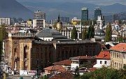
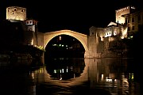
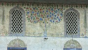

|  |
SarajevoHow to make the most of your time in Bosnia's capital and the surrounding area. |
|  |
Mostar and SurroundingsEveryone comes to see the bridge, but Herzegovina's principal town has more to offer. Find out what else to see in the city and the nearby countryside. |
|  |
Two towns in Central BosniaIf you want to get beyond the "Big Two" of Mostar and Sarajevo, consider visiting Travnik and Jajce. |